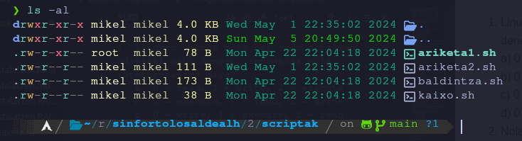

a) 0 = read, 1 = write, 2 = execute
b) 0 = execute, 1 = read, 2 = write
c) 0 = write, 1 = execute, 2 = read
d) 0 = execute, 1 = write, 2 = read
a) chmod u+x file.txt
b) chmod x+u file.txt
c) chmod +u+x file.txt
d) chmod u+x+ file.txt
a) chmod +t file.txt
b) chmod 1755 file.txt
c) chmod u+s file.txt
d) chmod +s file.txt

a) Jabeak soilik aldatu edo ezabatu dezake fitxategia
b) Taldeko erabiltzaileek soilik aldatu dezakete fitxategia
c) Root-ek soilik aldatu edo ezabatu dezake fitxategia
d) Guztiak aldatu edo ezabatu dezakete fitxategia
a) Erabiltzaile guztiek fitxategiaren exekuzio baimenak izango dituzte
b) Erabiltzaile guztiek fitxategiaren idazketa baimenak izango dituzte
c) Sortzaileak soilik fitxategiaren exekuzio baimenak izango ditu
d) Fitxategia, sortzailearen baimenekin exekutatuko da
-c ezaugarriak fitxategiari ematen dion? (+1 / -0,33)a) Fitxategia konprimituta gordetzen da
b) Fitxategia ezabatzean, zeroekin berridatzi egiten da
c) Fitxategia ezabatzean, okupatzen zen memoria ezabatzen da
d) Fitxategiari datuak bakarrik gehitu ahal zaizkio, aurretin zegoen edukia aldatu gabe
-u ezaugarriak fitxategiari ematen dion? (+1 / -0,33)a) Fitxategia konprimituta gordetzen da
b) Fitxategia ezabatzean, zeroekin berridatzi egiten da
c) Fitxategia ezabatzean, datuak berreskura daitezke gero
d) Fitxategiari datuak bakarrik gehitu ahal zaizkio, aurretin zegoen edukia aldatu gabe
-a ezaugarriak fitxategiari ematen dion? (+1 / -0,33)a) Fitxategia konprimituta gordetzen da
b) Fitxategia ezabatzean, zeroekin berridatzi egiten da
c) Fitxategia ezabatzean, okupatzen zen memoria ezabatzen da
d) Fitxategiari datuak bakarrik gehitu ahal zaizkio, aurretin zegoen edukia aldatu gabe
a) read ALDAGAIA
b) echo \$ALDAGAIA
c) read "ALDAGAIA"
d) read $ALDAGAIA
a) echo "nire ALDAGAIA"
b) echo "nire -ALDAGAIA"
c) echo "nire $ALDAGAIA"
d) echo "nire #ALDAGAIA"
#!/bin/bash
for param in "$@"
do
echo $param
done
> Nire
> katua
> rayo
> izena
> du
$@ ikurra? (+1)#!/bin/bash
read -r ALDAGAIA
if [ "$ALDAGAIA" -ge 5 ]; then
echo "tximista"
else
if [ "$ALDAGAIA" -eq 3 ]; then
echo "rayo"
elif [ "$ALDAGAIA" -gt 3 ]; then
echo "rayo"
else
echo "whiskers"
fi
fi
rayo ikusteko? (+0.5)1334 idazten badu? (+0.5)-999 idazten badu? (+0.5)#!/bin/bash
ALDAGAIA=0
while [ "$ALDAGAIA" -le 6 ] ; do
ALDAGAIA = ALDAGAIA + 2
echo "rasca $ALDAGAIA"
echo "pika {$ALDAGAIA + 3}"
done